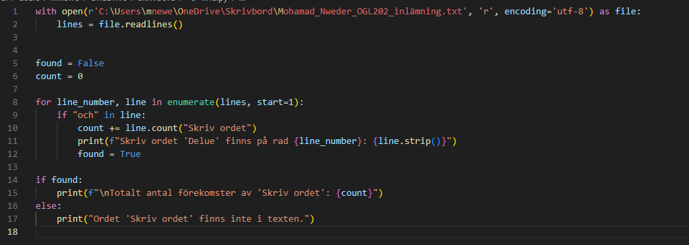

<h1>My Projects</h1>
<h2>My top 3 projects of all-time.</h2>
<hr />
<h3>Find world in file </h3>
<p>This is my favourite project. It helps to find worlds and count them in a text.</p>

<!-- <h3>Ex Machina</h3>
<p>Really cool sci-fi movie.</p>
<h3>Drive</h3>
<p>Super beautiful film. Really artistic.</p> -->